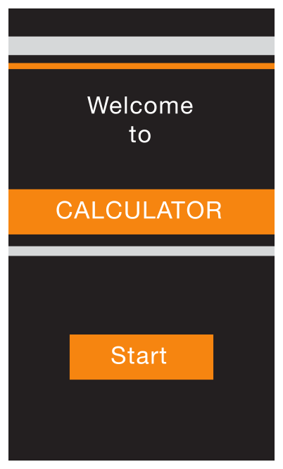

Starting and Stopping
Start Instantly
It’s often said that people spend no more than a minute or two evaluating a new app. When you make the most of this brief period by presenting useful content immediately, you pique the interest of new users and give all users a superior experience.
As much as possible, avoid displaying a splash screen or other startup experience. It’s best when users can begin using your app immediately.
Recommended

Not Recommended

Avoid asking people to supply setup information. Instead:
Focus on the needs of 80 percent of your users. When you do this, most people won’t have to supply any settings, because the app is already set up to behave the way they expect. If there is functionality that only a few users might want—or that most users might want only once—leave it out.
Get as much information as possible from other sources. If you can use any of the information people supply in built-in app or device settings, query the system for these values; don’t ask people to enter them again.
If you must ask for setup information, prompt people to enter it within your app. Then, store this information as soon as possible (potentially, in your app’s settings). This way, people aren’t forced to switch to Settings before they get the chance to enjoy your app. If people need to make changes to this information later, they can go to the app’s settings at any time.
Delay a login requirement for as long as possible. It’s best when users can navigate through much of your app and use some of its functionality without logging in. For example, App Store doesn’t ask users to log in until they decide to buy something. Users often abandon apps that force them to log in before they can do anything useful.
If users must log in, display in the login view a brief, friendly explanation that describes the reasons for the requirement and how it benefits users.
Think carefully before providing an onboarding experience. (Onboarding introduces an app’s features and explains how to perform common tasks.) Before you consider onboarding, make every effort to design your app so that all its features and tasks are intuitive and easily discoverable. Onboarding is not a substitute for good app design. If you still feel that onboarding is necessary, follow these guidelines to create a brief, targeted experience that doesn’t get in the user’s way.
Give users only the information they need to get started. A good onboarding experience shows users what to do first or briefly demonstrates a few of the features that most users are interested in. If you give too much information to users before they have a chance to explore your app, you make users responsible for remembering details they don't need right away and you may send the message that your app is hard to use. If additional help is needed for specific tasks, provide that help only when the user is performing those tasks.
Use animation and interactivity to engage users and help them learn by doing. Add text sparingly and only if it enriches the experience; don’t expect users to read long passages. For example, don’t describe how to perform a simple task when you can use animation to show users what to do. To lead users through a more complex task, you might add transient overlay views that briefly describe each step as the user is about to do it. As much as possible, avoid displaying screenshots of your app because they’re not interactive and users can confuse them with app UI.
Make it easy to dismiss or skip the onboarding experience. After users have viewed the onboarding experience, they probably don’t want to view it again; other users may not want to view it at all. Be sure to remember the choice users make and don’t force them to make it every time they open your app.
Avoid asking users to rate your app too soon. Asking for a rating too soon tends to annoy users and may decrease the amount of useful feedback you receive. To encourage well-considered feedback, be sure to give users a chance to form an opinion about your app before you ask them to rate it. For example, you might wait until users have visited a minimum number of different screens or performed a minimum number of tasks.
In general, launch in the device’s default orientation. On iPhone, the default orientation is portrait; on iPad, it’s the current device orientation. If your app runs only in landscape orientation, you should always launch in landscape and let users rotate the device if necessary.
Supply a launch image that closely resembles the first screen of the app. iOS displays the launch image the moment your app starts—giving users the impression that your app is fast and giving your app enough time to load content. Learn how to create a launch image in Launch Images.
If possible, avoid requiring users to read a disclaimer or agree to an end-user license agreement when they first start your app. Instead, you can let the App Store display your disclaimer or end-user license agreement (EULA) so that people can access it before they get your app. If you must provide these items within your app, be sure to integrate them in a way that harmonizes with your UI and balances business requirements with user experience needs.
When your app restarts, restore its state so users can continue where they left off. People shouldn’t have to remember the steps they took to reach their previous location in your app. To learn more about efficient ways to preserve and restore your app’s state, see “State Preservation and Restoration”.
Always Be Prepared to Stop
An iOS app never displays a Close or Quit option. People stop using an app when they switch to another app, return to the Home screen, or put their devices in sleep mode.
When people switch away from your app, iOS multitasking transitions it to the background and replaces its UI with the UI of the new app. To prepare for this situation, your app should:
Save user data as soon as possible and as often as reasonable. Do this because an app in the background can be told to exit or terminate at any time.
Save the current state when stopping at the finest level of detail possible. In this way, people don’t lose their context when they switch back to your app. For example, if your app displays scrolling data, save the current scroll position. You can learn more about efficient ways to preserve and restore your app’s state in “State Preservation and Restoration”.
Some apps may need to keep running in the background while users run another app in the foreground. For example, users might want to keep listening to the song that’s playing in one app while they’re using a different app to check their to-do list or play a game. Learn how to handle multitasking correctly and gracefully in Multitasking.
Never quit an iOS app programmatically. People tend to interpret this as a crash. If something prevents your app from functioning as intended, you need to tell users about the situation and explain what they can do about it. Here are two good ways to do this:

If all app features are unavailable, display a screen that describes the situation and suggests a correction. The information gives feedback to users and reassures them that there’s nothing wrong with your app. It also puts users in control, letting them decide whether they want to take corrective action and continue using your app or switch to another app.
If only some app features are unavailable, display either a screen or an alert when people try to use the feature. Otherwise, people should be able to use the rest of the app. If you decide to use an alert, be sure to display it only when people try to access the feature that isn’t functioning.

Copyright © 2014 Apple Inc. All rights reserved. Terms of Use | Privacy Policy | Updated: 2014-03-10